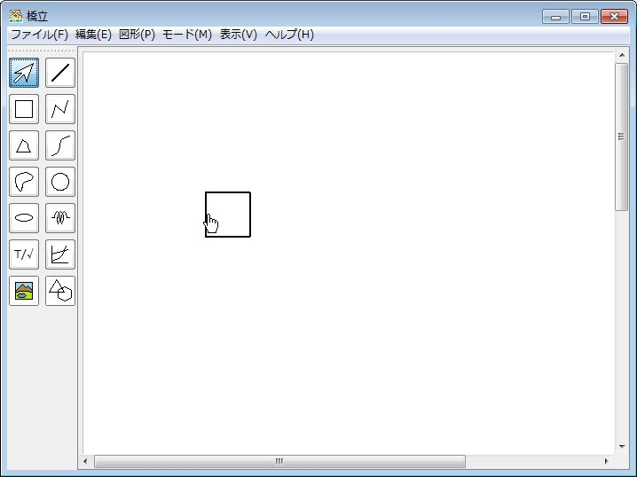
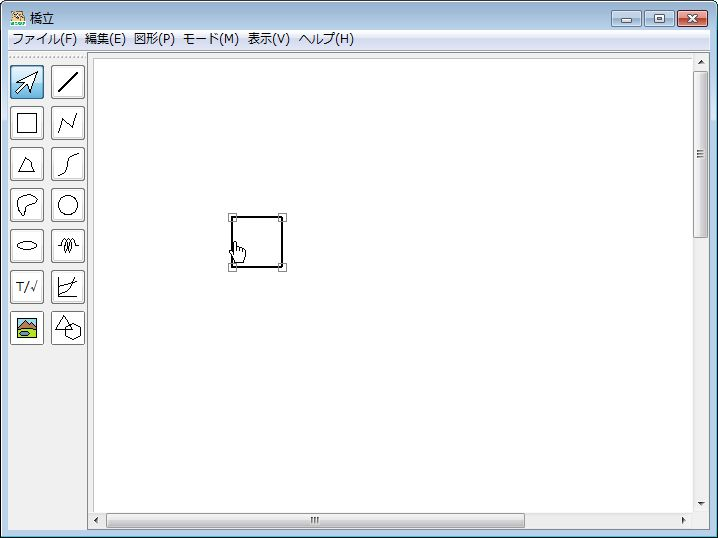
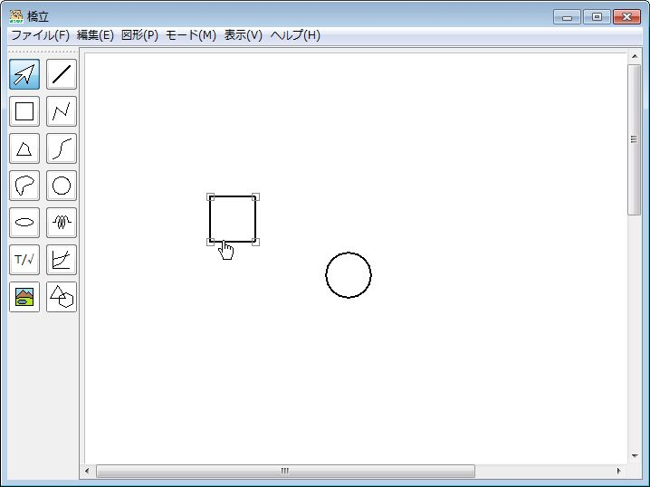
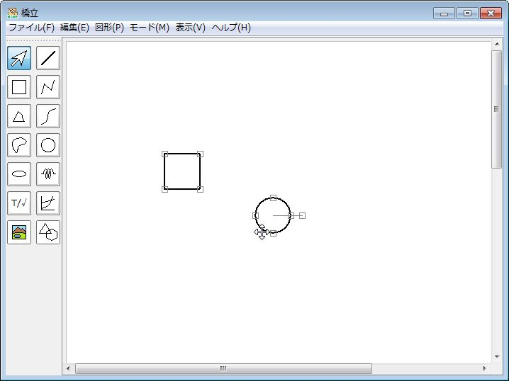
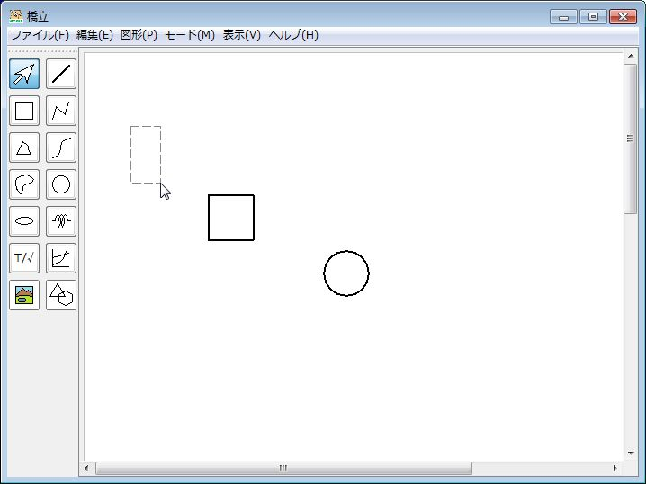
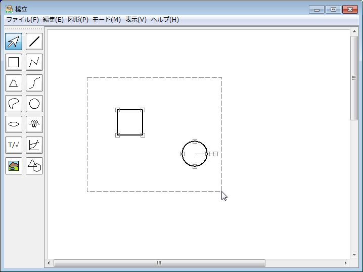
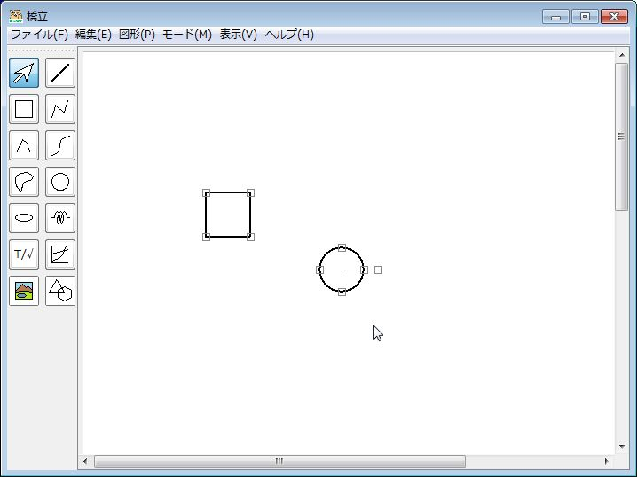

図形を選択する
一つ選択する
- (1) 図形ツールバーのをクリックする → 選択モードになる
- (2) 描画領域で図形にカーソルを近づける
- (3) カーソルが
 になったらクリックする → 図形が選択される
になったらクリックする → 図形が選択される
|  |
クリックする ⇒ |  |
複数選択する(1)
- (1) 図形を一つ選択する 
- (2) 別の図形にカーソルを近づける
- (3) カーソルがになったら、
Ctrl キーを押したままでクリックする → もう一つ図形が選択される「Ctrl」キー
＋
クリック
⇒ - (3)を繰り返して、図形を選択する
複数選択する(2)
- (1) 図形ツールバーのをクリックする → 選択モードになる
- (2) 描画領域でクリックする
- (3) クリックしたままで移動する → 選択枠が表示されて、枠内の図形が選択される
 クリックしたまま移動する
⇒ - (3) クリックをやめる → 図形が選択される
 クリックをやめる
⇒
全図形を選択する
Ctrl キーとA キーを同時に押す → 全ての図形が選択される
選択の解除
- (1) 描画領域の図形がない場所をクリックする → 選択が解除される